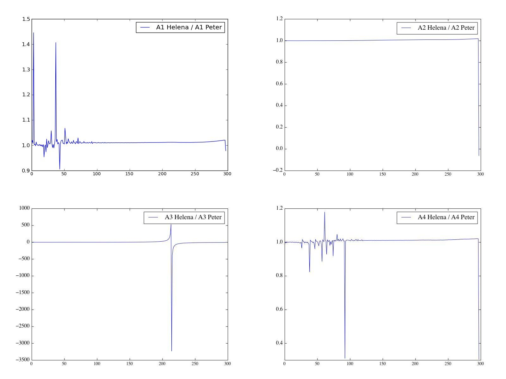
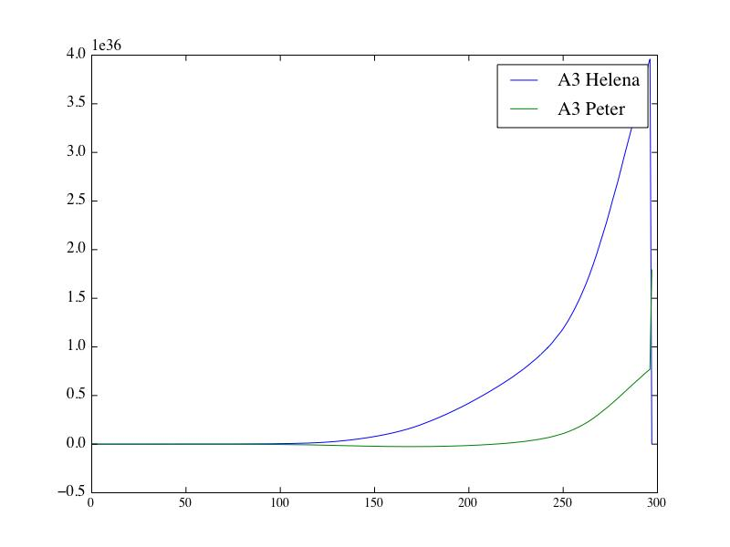

Date & Time: Sept. 5, 2012
Location: home
Computing context: MachoMac
(/Desktop/Research/CppHenyeyCode/src, /Desktop/Research/BodenheimerCode/UnalteredCode)
From last time:
The G values mostly agree between the two codes, except at the outer mass cell
Set the outermost G values (in Helena) to the values they have in Peter's code, and see what (if any) difference that makes.
Result: doesn't make a bit of difference. The dX values from Helena are still huge.
Also tried additionally setting the jMax-1 mass cell values of CDE to Peter's values.
It also failed to make a bit of difference.
Figure out what is going on with the CDE calculations in Helena that's causing the code to produce such different dX values
From yesterday, it looks like the DE matrices differ more between codes than the C matrix values do
Why is that??
Go over the CDE indexing in Helena once more, and make sure I've got it set to the correct indexing pattern
At least according to the agreement b/w the two codes' CDE values, it looks like NewCalcCDEG.cpp, rather than NewCalcCDEG_flip.cpp, is using the correct indexing approach.
The CDE values have opposite signs in the two codes
It looks like in the D/E (can't recall which), the row 3, column 1 values are not staying consistent w/ that factor of -1 difference b/w the codes.
The outermost G values also differ b/w codes, especially the G2J value
This probably has something to do with some difference in the way the atmos results are getting calculated b/w Peter's code & Helena.
Does setting the outmost G values to Peter's code's G values get Helena to produce dX values that agree w/ Peter's code?
Nope, it makes absolutely no difference.
Going through and seeing what effect replacing different rows of the CDEG matrics w/ the Peter values. The following seem to have quite an effect:
C[j][2] This one has an effect on getting the dL values to be at least similar orders of magnitude
D[j][2] This one is also connected to the sign fluctuations in the dX profiles
D[j][3] This one is important, but I'm not sure how to describe the effect it has on the dX profiles. It definitely effects whether the dX profiles rise/fall as a function of mass cell number, in agreement (or not) with the dX profiles calculated by Peter's code.
E[j][3] This one is connected to the sign fluctuations in the dX profiles.
The outermost G2J, G4J (but esp. the former) values differ between codes. Perhaps this is also having some significant effect on the outermost few CDE matrices??
Next time, start by figuring how the G2J calculations need to be modified to eliminate this discrepancy
To Do Today:
Next time, perhaps go through and plot/compare the A matrix values b/w the two codes (a step intermediate b/w calculating the CDEG values and finding the dX values). Maybe this will help show me where/how things are going off the rails in the dX calculations.
Results: see Figure 1. For further details on the A3 profiles from both codes, see Figure 2.

Comparison of the A values produced by Peter's code and
by Helena for a 1Msun, n=3/2 input model, on the first convergence
pass. Notice how A2 and A4 differ most at the outermost mass cell.
Figure
1:

The raw A3 profiles from Helena and from Peter's code.
The A3 profiles vary the most obviously between the two codes.
Figure
2:
So, need to figure out what's going on with the A profiles
in Helena
If the D or G values are 'off' at the innermost mass cell,
that could throw things off.
The outermost G2 and G4 values are very different between the two codes
If this were responsible for the dX difference b/w the
codes, though, you'd think that setting the outermost G values in
Helena equal to the G values from Peter's code would fix the
problem... No,
actually, because that wouldn't address the issues that would
remain in the CDE value calculations at the outermost mass cell.
Maybe how the two codes are determining or handling the P/r/L/T values at the outermost mass cell is causing the problem.
Find what those values are at the outermost mass cell in both codes.
Try setting Helena's Tatm, Patm, Ratm values to the ones
calculated by Peter's code, and see if that fixes any of the
discrepancies...?
How are the atmospheric T/P/r/rho values handled in Peter's code? Does his code reset the outermost mass cell values to those atmos values? What's going on, there, and how is it different from what's going on in Helena?
The outermost mass cell values are not at all changed in the Fortran code when the atmos subroutine is called.
I may have screwed up the G calculations at the outermost mass cells when I updated the G calculation subroutines in Helena. Let's check that out in more detail.
I 'fixed' at least one issue, there, by setting the G calcs to call the atmos subroutine when they're at the outermost mass cell, to get the Tatm, Patm, etc. values before they calculate/return the G value.
It's looking like the G2 and G4 value problems at the outermost mass cell are related to my atmos.cpp calculations. In the midst of debugging that and comparing its results to Peter's code.
My Tatm values are ~10x lower than Peters
My Ratm values are just straight-up way too small...
To keep in mind for later:
For the 1 Mjup model: do the Peter and Helena models' dX values (raw) now agree, too?